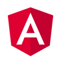

Cascade Style Sheet (CSS)
Desenvolvido por World Wide Web e Consortium,
O CSS é uma linguagem de estilo usada para descrever a apresentação de um documento escrito em uma
linguagem de marcação. Embora o CSS seja frequentemente usado para definir a aparência de páginas da Web
e da interface de usuário escritas em HTML e XHTML, o CSS também pode ser usado para definir a aparência
de documentos publicados em outras linguagens de marcação, incluindo XHTML, SVG e XML, incluindo
elementos usados para formatar texto em XML.
Encontra-se na versão 3, que foi publicada em 17 de dezembro de 2018.
Clickando na imagem temos acesso ao site oficial do CSS.
As principais características do CSS são:
Permissão do usuários de definir a aparência de páginas da Web e de documentos de apresentação;
Permite a separação do conteúdo de um documento da sua apresentação;
Permite a reutilização de estilos em diferentes documentos;
Permite a aplicação de diferentes estilos a diferentes dispositivos;
Hypertext Markup Language (HTML)
Desenvolvido por W3C e WHATWG,
HTML (Hypertext Markup Language) é o bloco de construção mais básico da web.
Define o significado e a estrutura do conteúdo da web.
Outras tecnologias além do HTML geralmente são usadas para descrever a
aparência/apresentação (CSS) ou a funcionalidade/comportamento (JavaScript) de uma página da web.
"Hipertexto" refere-se aos links que conectam páginas da Web entre si, seja dentro de um único site ou entre
sites.
Links são um aspecto fundamental da web. Ao carregar conteúdo na Internet e vinculá-lo a páginas criadas por
outras pessoas,
todos nós nos tornamos um participante ativo na world wide web.
Tecnologias backend
Django
Desenvolvido por Django Software Foundation,
Django é um framework web de código aberto escrito em Python,
que segue o padrão de projeto model-template-view.
É mantido pela Django Software Foundation, uma organização sem fins lucrativos.
Permite uma documentação excelente, integra Python Web-Framework, Escalibilidade Alta, Versatilidade,
permite um desenvolvido rápido.
Laravel
Laravel é um framework web de código aberto com licença MIT, escrito em PHP e desenhado para o
desenvolvimento de aplicações e serviços web usando o padrão de arquitetura MVC (Model-View-Controller).
O Laravel foi criado por Taylor Otwell em 2011.
Tecnologias Front End
React(JavaScript)
Desenvolvido pelo Facebook em 2013,
React é uma biblioteca JavaScript de código aberto com foco em criar interfaces de usuário em páginas.
Tem como objetivo ser a V de MVC (Model-View-Controller), ou seja, a camada de visualização.
É mantido pelo Facebook, Instagram, outras empresas e uma comunidade de desenvolvedores individuais.
Tem bastantes vantagens, como: Desempenho, Componentes, Reutilização, Comunidade, Documentação, etc.
Angular

Angular é um framework JavaScript de código aberto criado em 2009 por Misko Hevery e Adam Abrons.
É mantido pela Google, que o utiliza em vários projetos, como o Google Maps.
É um framework baseado em componentes, ou seja, é possível criar componentes reutilizáveis.
Também é possível criar componentes que podem ser utilizados em outras aplicações.
Tem bastantes vantagens, como: Desempenho, Componentes, Reutilização, Comunidade, Documentação, etc.